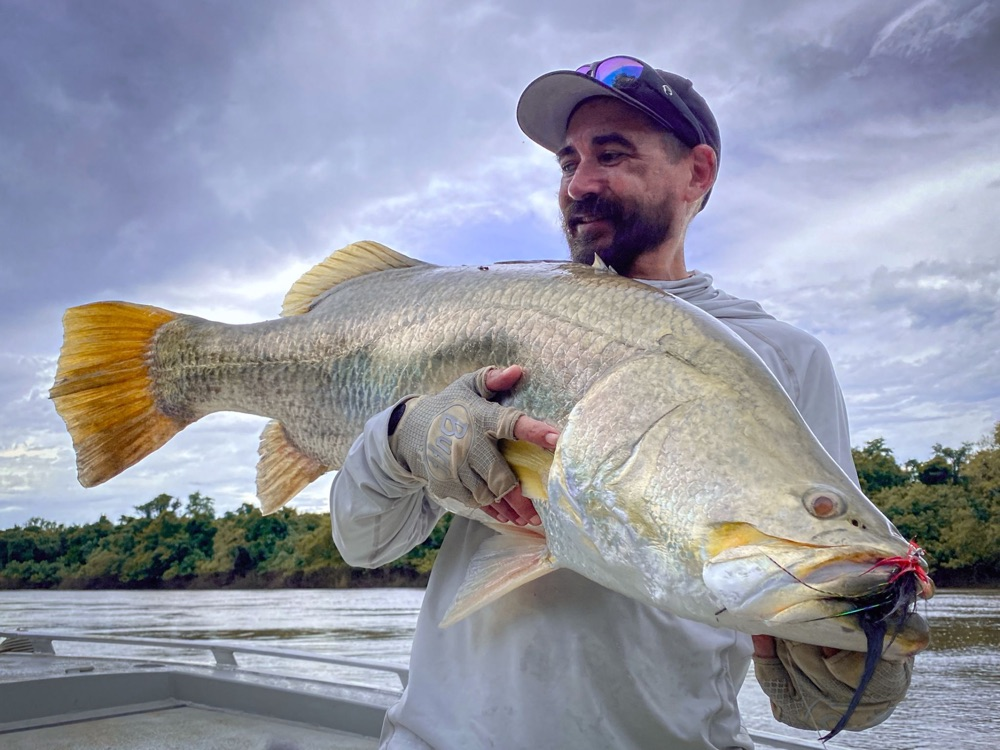
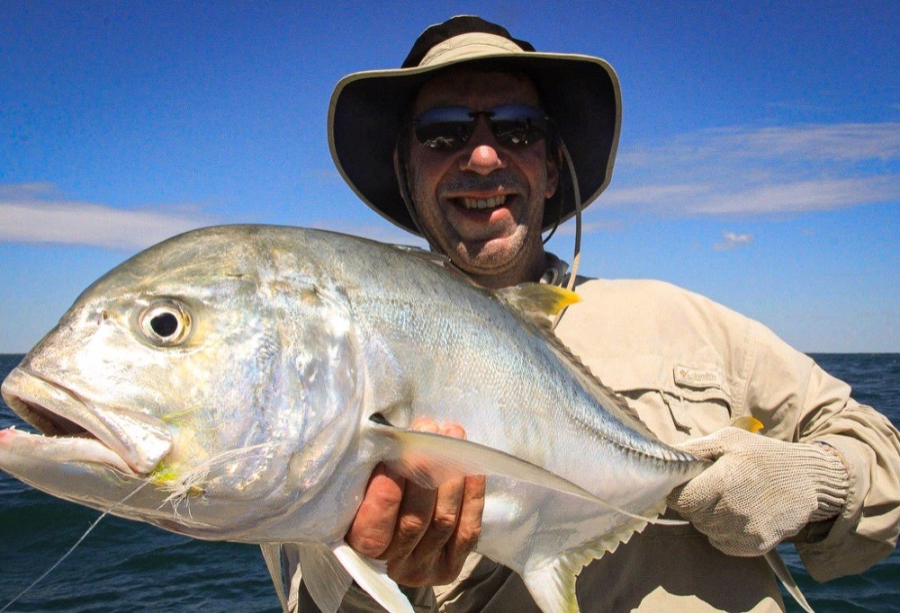
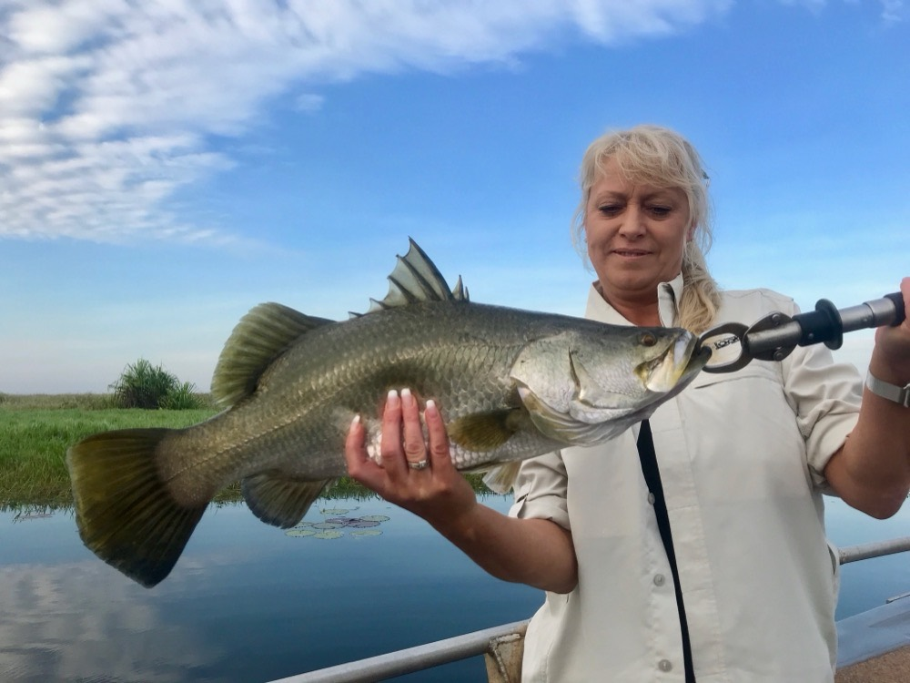

Barra know-how / A season guide
Best Time to Fish the Top End
By Watty · Guiding the Top End since 2011
Barra know-how / A season guide
By Watty · Guiding the Top End since 2011
"When's the best time to come?" It's the question I get more than any other, and the honest answer is: it depends what you're after. The Top End runs on three seasons, and each one fishes completely differently. Here's how I read them — so you can pick the trip that suits you.
Mid Feb – End May
If you want the best shot at both numbers and big barra, this is it. As the wet-season floodwaters fall and drain off the floodplains, they drag bait into the creeks and mouths — and the barra know it. They stack on the drains to feed.
It's still humid and can be wet — but the fishing's worth it. This is our Run-Off Barra season, and it books out early.

June – August
The dry is the backbone of the charter calendar, and for good reason: the water clears, the tides settle, and the patterns stabilise. It's the easiest fishing to plan around and the most comfortable to be out in.
This is prime time for our Dundee & Bynoe Harbour trips and clean-water fly fishing — sight-casting barra in shallow water.

September – December
The build-up is the pre-monsoon stretch — heat, humidity and the first storms. It's uncomfortable, but that building energy can absolutely ignite the feeding. The bite windows get shorter, but once you learn to read them, they're surprisingly predictable.
Stick to one estuary or bay and watch how each tide stage changes the water colour and bait movement — that's how you crack it.


The short answer
Run-off (mid Feb – end May). Numbers and big fish, if you don't mind a bit of humidity.
Dry season (Jun – Aug). Stable weather, clean water, consistent fishing.
Three fly seasons run mid Feb to end Nov — sight casting is at its best from June.
The build-up — hot and sweaty, but it can turn on hard.
Whatever season you pick, the planning underneath it is the same — that's my Four Pillars framework. And remember, we book out up to two years ahead — if a season's calling you, get in early.